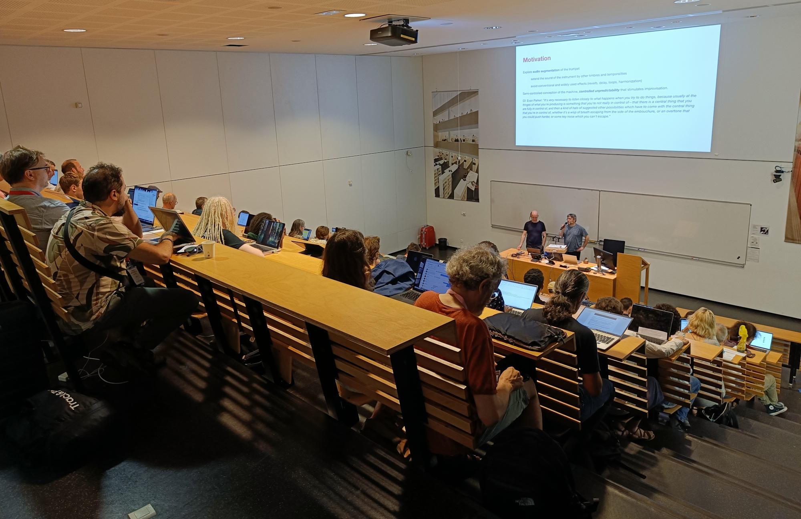

Journées de l'Informatique Musicale 2025

Chaque année, les Journées d'Informatique Musicale réunissent des chercheurs, développeurs et différents acteurs de la vie musicale utilisant l'informatique comme outil de diffusion, de création, d'interprétation ou de pédagogie. Les JIM sont pilotées par l'Association Francophone d'Informatique Musicale (AFIM) et sont soutenues par la Direction Générale de la Création Artistique du ministère français de la Culture. L'édition 2025 des JIMs s'est déroulée du 23 au 25 juin 2025 à l'INSA de Lyon sous l'égide de l'Inria et de GRAME - Centre National de Création Musicale.
Prix « Jeune Chercheuse / Jeune Chercheur » :
Le prix AFIM « Jeune Chercheuse / Jeune Chercheur » a été attribué par vote à Jeanne Ribeau pour son travail avec Stéphane Letz sur Applications audio Web avec Faust : innovations techniques au service de la transmission.
Calendrier
- 31 mars 2025 (
24 mars 2025): Limite de soumission des articles - 22 avril 2025 (
18 avril 2025): Limite de soumission des appréciations par le comité scientifique - 25 avril 2025: Notification de l'acceptation
- 23 mai 2025: Limite de soumission des versions finales
Appel à contributions
Thématiques 2025
En plus des thématiques reconduites, cette édition mettra l'accent sur les thématiques suivantes :
Informatique musicale et frugalité
L'informatique musicale frugale consiste à concevoir et utiliser des outils numériques pour la création musicale de manière économe en ressources, réduisant ainsi l'empreinte écologique des technologies musicales. Elle favorise l’utilisation de logiciels légers, l'adoption de solutions open source, de matériel durable, la réutilisation d'objets existants, et l'optimisation des performances pour éviter la surconsommation énergétique, tout en minimisant "l’effet rebond", lorsque les gains en efficacité peuvent entraîner une augmentation de l’utilisation. Les JIMs 2025 invitent la communauté à s’emparer de cette thématique qui émerge de manière plus large autour de l'impact du numérique dans la société, et sollicitent des contributions dans ce domaine.
Systèmes embarqués et informatique musicale
Les systèmes embarqués jouent maintenant un rôle prépondérant dans les différents domaines liés à l'informatique musicale. On les retrouve dans des interfaces de contrôle, dans des instruments de musique numériques pour effectuer des tâches de traitement du signal, dans des modules de synthèses sonores, etc. Les JIMs 2025 mettront l'accent sur ces technologies et invitent de nouvelles contributions dans ce domaine.
IA, co-créativité et informatique musicale
La présence croissante des systèmes informés dans les pratiques de création sonore soulève des questions traversant de nombreuses thématiques habituelles des JIM. L'IA ouvre des espaces d'exploration musicaux et technologiques que cette édition souhaite mettre en avant. Les JIMs 2025 invitent à réfléchir à ces technologies dans toute leur diversité, et à proposer des contributions explorant leurs usages, implications et potentialités pour l’informatique musicale.
Thématiques Reconduites
- Systèmes informatiques
- Systèmes et protocoles temps réel pour l'informatique musicale
- Logiciels libres pour l'analyse, la synthèse, le traitement des sons et la création musicale
- Nouvelles stratégies pour la sonification de données
- Langages de programmation pour la synthèse et le traitement du son
- Traitement du signal
- Algorithmes pour la synthèse et le traitement du son
- Dispositifs matériels pour le traitement du son
- Algorithmes et interfaces pour la spatialisation sonore
- Création assistée par ordinateur
- Environnements et langages d'aide à la composition musicale
- Orchestration assistée par ordinateur
- Systèmes pour la création musicale, de la microstructure à la macroforme
- Systèmes de composition et d'arrangement automatiques
- Outils informatiques pour la spatialisation et diffusion sonore
- Interprétation, arts performatifs et technologie
- Interfaces logicielles et matérielles pour l'interprétation et l'exécution musicale
- Dispositifs matériels et logiciels pour pièces interactives
- Modélisation et simulation de l'interprétation musicale
- Captation et extension numérique du geste instrumental
- Geste, virtuosité et nouveaux médias
- Nouvelles interfaces, nouveaux modes de jeu
- Notation musicale
- Logiciels de reconnaissance optique de partitions
- Systèmes pour l'édition et la publication musicale
- Notation et visualisation de la musique
- Partitions interactives
- Aspects historiques et préservation
- Histoire et aspects sociologiques de l'informatique musicale
- Définition/redéfinition du rôle du réalisateur en informatique musicale (RIM)
- Normalisation, archivage et transmission de l'information musicale
- Portage et recréation d'œuvres mixtes et interactives
- Préservation des œuvres utilisant les technologies numériques
- Rapports d'activités de centres de recherche musicale
- Musicologie computationnelle
- Formalisation et représentation des structures musicales
- Approches computationnelles de l'analyse musicale
- Formalisation et modélisation des connaissances musicales
- Modélisation et simulation de la perception sonore et musicale
- Outils d'aide à l'analyse musicale
- Systèmes d'analyse et de traitement du signal acoustique
- Reconnaissance et extraction automatique des paramètres musicaux
- Analyse et représentation du geste instrumental
Détails de la candidature :
Les articles peuvent être écrits en français ou en anglais, entre 4 et 10 pages. Pour les articles en anglais, un résumé en français est obligatoire. Les communications donneront lieu à des présentations orales.
Les articles seront soumis au format PDF. La mise en page devra être réalisée à partir des modèles Word ou LaTeX disponibles aux liens suivants :
Les articles seront déposés en ligne sur la plateforme de soumission des JIM 2025: https://jim25.sciencesconf.org/
Comités
Comité d'organisation
| Nom | Role |
|---|---|
| Romain MICHON | General Chair |
| Paul GOUTMANN | Paper Chair |
| Stéphane LETZ | Music Chair |
Autres membres du comité d'organisation :
Jean-Cyrille BURDET // Pierre COCHARD // Yann ORLAREY // Tanguy RISSET
Comité de pilotage des JIM
Daniel ARFIB // Gérard ASSAYAG // Alain BONARDI // Marc CHEMILLER // Myriam DESAINTE-CATHERINE // Dominique FOBER // Mikhail MALT // Yann ORLAREY // François PACHET // Laurent POTTIER // Julien RABIN // Jean-Michel RACZINSKI // Anne SEDES
Editions antérieures
- JIM 2023 : https://jim2023.sciencesconf.org/
- JIM 2022 : https://smc22.grame.fr/program.html#JIM
- JIM 2021 : https://jim2021.sciencesconf.org/
- JIM 2020 : https://jim2020.sciencesconf.org/
- JIM 2019 : https://jim2019.sciencesconf.org/
- JIM 2018 : http://www.algomus.fr/jim2018/
- JIM 2017 : https://jim2017.sciencesconf.org/
- JIM 2016 : http://jim2016.gmea.net/
- JIM 2015 : http://jim2015.oicrm.org/
- JIM 2014 : http://jim.afim-asso.org/jim2014/index.html
- JIM 2013 : http://jim.afim-asso.org/JIM2013/
- JIM 2012 : http://jim.afim-asso.org/jim12/
- JIM 2011 : http://jim.afim-asso.org/jim11/
- JIM 2010 : http://jim.afim-asso.org/jim10/index.php/jims/jim10/
- JIM 2009 : http://jim.afim-asso.org/jim09/index.php/descrip/conf.html
- JIM 2008 : http://jim.afim-asso.org/jim08/content/
- JIM 2007 : http://jim.afim-asso.org/jim2007/
- JIM 2006 : http://smc.afim-asso.org/smc06/
- JIM 2005 : http://jim.afim-asso.org/jim2005/
- JIM 2004 : http://smc.afim-asso.org/smc04/
- JIM 2003 : http://jim2003.agglo-montbeliard.fr/
- JIM 2002 : http://jim.afim-asso.org/jim2002/
- JIM 2001 : http://jim.afim-asso.org/jim2001/
- JIM 2000 : http://jim.afim-asso.org/jim2000/
- JIM 1999 : http://jim.afim-asso.org/jim99/
- JIM 1998 : http://jim.afim-asso.org/jim98/JIM98.html
- JIM 1997 : http://jim.afim-asso.org/jim97/
- JIM 1996 : http://jim.afim-asso.org/jim96/
- JIM 1995 : http://jim.afim-asso.org/jim95/
- JIM 1994 : http://jim.afim-asso.org/jim94/
Frais d'inscription et informations pratiques
Les informations concernant les frais d'inscription et comment se rendre à la conférence sont partagées entre les JIM et LAC et peuvent être respectivement trouvées dans les onglets Register et Travel du ce site.